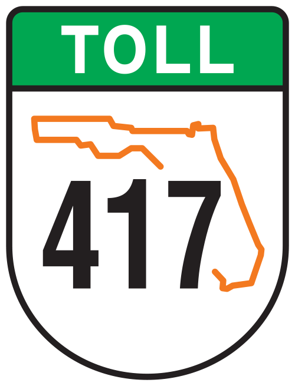
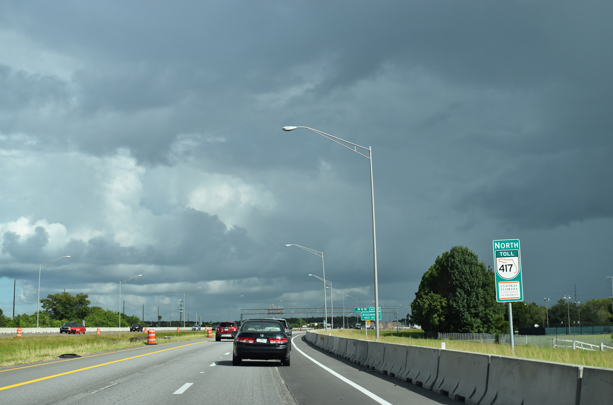

Toll Roads
Toll 417
The next road is an toll road, for the hurring drivers as well as the big spenders. SR 417/Central Florida Greeneway, known for bypassing most of Orlando's popular areas such as the Disney parks, Gatorland, University of Central Florida, Orlando International Airport
and the various roads Orlando is known for with the benefit of starting and ending on the same Interstate, which is called I-4
so what more could you ask for? When it comes to traffic, it's an easy alternate for a steady driver.

Screenshot near Exit 11 (U.S. 17/92/441) heading East.
NEXT
BACK